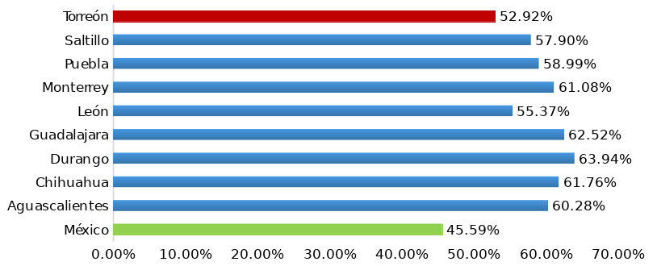
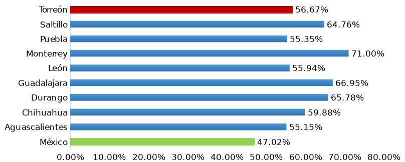

En noviembre de 2017, la Unión Internacional de Telecomunicaciones (UIT) publicó su más reciente Medición de la Sociedad de la Información, para lo cual calcula el Índice de Desarrollo de las Tecnologías de la Información y Comunicación (IDI, por sus siglas en inglés). En dicho ranking México ocupó el lugar 87 de 176 ciudades evaluadas en su capacidad para convertirse en una Sociedad de Información, es decir, aquella en la que sus miembros cuentan con libre flujo de información, ideas y conocimientos en todo momento y desde cualquier lugar.
El índice incluye 11 indicadores clasificados en las tres dimensiones de la evolución a una Sociedad de la Información:
- Disponibilidad de infraestructura y acceso a Tecnologías de la Información y Comunicación (TICs). Esta dimensión es la más básica e incluye las suscripciones de teléfono fijo y telefonía móvil por cada 100 habitantes y porcentaje de hogares con computadora y conexión a internet.
- Intensidad en el uso de TICs. Los indicadores para medir esta dimensión son el porcentaje de usuarios de internet y las suscripciones fijas y móviles de banda ancha por cada 100 habitantes.
- Habilidades de los usuarios en el uso de TICs. Esta última dimensión pretende medir las capacidades y habilidades de los usuarios de las TICs. Como indicadores Proxy utiliza los años de escolaridad y el porcentaje de matriculados en educación secundaria y superior.
La mejor puntuación que obtuvo México fue en la dimensión de Intensidad de Uso, donde se colocó en el lugar 76, mientras en las dimensiones de Disponibilidad y Habilidades, se ubicó en los lugares 94 y 95, respectivamente. En el Índice general México subió tres lugares desde el lugar 90 en 2016, con una calificación de 5.15; cuando el primer lugar equivale al 8.98 obtenido por Islandia.
Para medir el desarrollo de las TICs al interior de México, INEGI realiza la Encuesta Nacional sobre Disponibilidad y Uso de Tecnologías de la Información en los Hogares (ENDUTIH), en donde se encuentra información a nivel nacional, estatal y hasta para 59 ciudades de la República, incluyendo a Torreón y su área metropolitana.
Cobertura local
De acuerdo a los resultados de la más reciente ENDUTIH realizada en 2016, en Torreón 158,325 hogares cuentan con computadora y 169,542 con conexión a internet, las cifras representan 53% y 57% de los hogares de la ciudad, por lo que superan la cobertura a nivel nacional, de 46% en el caso de las computadoras y 47% en conexión a internet.
Sin embargo, Torreón sí tiene una brecha tecnológica con respecto a las ciudades de Saltillo, Chihuahua, Guadalajara y Monterrey, por mencionar algunas; las cuales tienen una cobertura de TICs de entre 65 y 70%. Otras ciudades como León, Puebla y Aguascalientes tienen niveles similares a Torreón.
Por otro lado, Torreón y su área metropolitana cuentan con aproximadamente 539,302 usuarios de computadora, que representan 54% de la población de 6 años y más. Por su parte, los usuarios de internet representan el 69%. Los promedios para México son de 47% para los usuarios de computadora y 60% para los usuarios de internet.
Asimismo en el municipio, 81% de los usuarios de computadora la utilizan como medio de entretenimiento, siendo éste el segundo uso más popular, después de la conexión a internet. Menos del 50% de los usuarios de computadora realizan actividades escolares o laborales, y tan solo alrededor del 20% la usa como medio de capacitación. Las cifras a nivel nacional se mantienen en niveles muy similares.
Con respecto a la escolaridad, tan solo 28% de los usuarios de internet tienen una licenciatura, no obstante la cifra aumenta a 32% con los usuarios de computadora. A nivel nacional, los usuarios de internet y computadora con licenciatura representan un 22% y 26%, de manera respectiva.
En conclusión, sí superamos el nivel nacional en Disponibilidad y Uso de TICs, pero no debemos perder de vista nuestro lugar a nivel internacional, en el que los niveles de referencia empleados para evaluar a los países son 100% de cobertura de internet en los hogares y 15 años promedio de escolaridad, entre otros.
Para alcanzar los niveles internacionales de una Sociedad de la Información todas las dimensiones son importantes. De hecho, un estudio realizado por la Comisión Económica Para América Latina y el Caribe (CEPAL), demuestra que la relación entre el porcentaje del gasto para el desarrollo de las TICs y la productividad es notoria en los países desarrollados, sin embargo la relación entre las variables no es clara en los países en desarrollo o subdesarrollados. En otras palabras, para que las TICs tengan un verdadero impacto, se necesita que los países tengan ciertas capacidades como infraestructura apropiada, accesibilidad a las TICs y usuarios preparados.
Hogares con computadora

Hogares con conexión a internet

Fuente: Encuesta Nacional sobre Disponibilidad y Uso de Tecnologías de la Información en los Hogares (ENDUTIH), 2016.